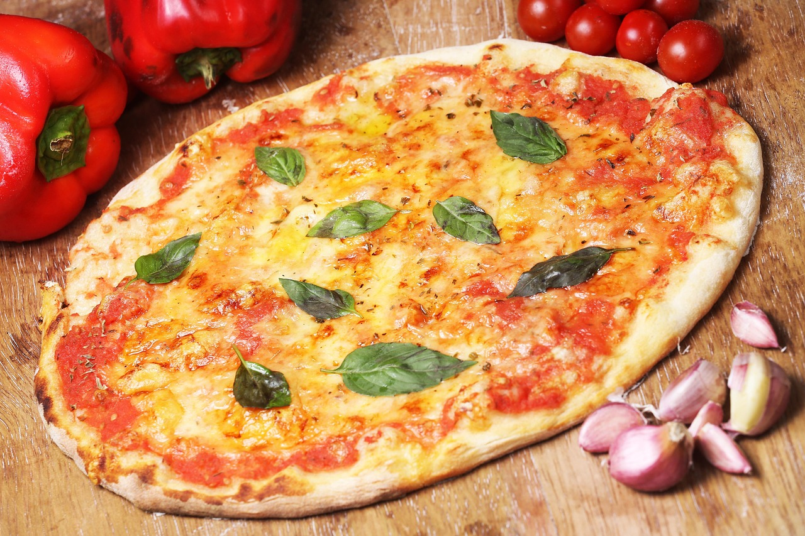

Home
Pizza

Description:
This is a traditional neopoltian style pizza recipe made with fresh pillowy dough, vibrant and tangy tomatos, and rich, milky cheese.
Ingredients:
- Fresh pizza dough
- San Marzano Tomatos
- Fresh buffalo mozzarella
- Fresh basil
- Preheat your oven to 500°F (260°C) or as hot as it gets.
- Roll out the dough on a floured surface. Transfer to a baking sheet or pizza stone.
- Spread tomato sauce evenly over the dough.
- Add mozzarella slices and a pinch of salt.
- Bake for 8&U+2013;10 minutes, or until the crust is golden and cheese is bubbling.
- Top with fresh basil and drizzle with olive oil before serving.